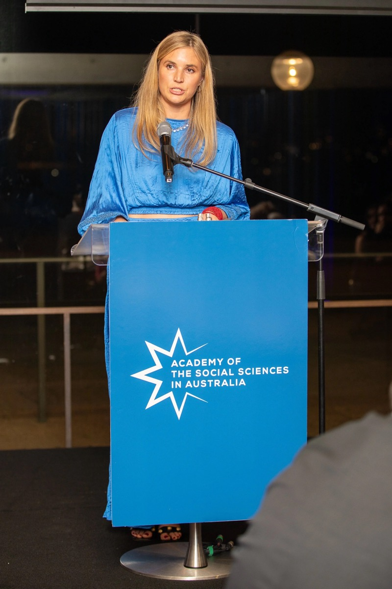

I'm a Senior Lecturer (Assistant Professor) in the Department of Economics at the University of Melbourne. I was previously a Harvard Academy Scholar at the Harvard Academy for International and Area Studies (AY 23/24). I received my PhD in political science from the University of California, San Diego in 2021. My research lies at the intersection of political economy, environmental economics and development economics.
I was awarded the 2025 Paul Bourke Award for Early Career Research by the Academy of Social Sciences in Australia. I use geographic data and causal methods to study the politics of deforestation in the Amazon. In this vein, I have papers which study the effects of property rights, both collective and private, on land use decisions. In another set of projects we use high resolution satellite imagery to study the effects of infrastructure investment on development, focusing on road construction projects.
My research has been published in PNAS, the Journal of Urban Economics, and the Journal of Environmental Economics and Management. While at UCSD, I was an affiliated student with the Big Pixel Initiative at UCSD and an IGCC fellow. My work has been funded by the CSSN at Brown University, the World Bank, the International Growth Center, the International Center at UCSD, CILAS and the Tinker Fund.
Prior to beginning my PhD, I worked as a research economist at the Chilean Antitrust Agency, Fiscalía Nacional Económica. I received a BA degree and Masters in Economics from the Pontificia Universidad Católica de Chile.